Les GPO (Group Policy Objects) sont des stratégies de groupe qui permettent d'appliquer automatiquement des règles et restrictions sur tous les PC du domaine depuis le serveur AD.
Appliquée sur brasserie.local. Politique de mot de passe et verrouillage de compte pour tous les utilisateurs.
Chemin : Configuration ordinateur > Paramètres Windows > Paramètres de sécurité > Stratégies de comptes > Stratégie de mot de passe
| Paramètre | Valeur |
|---|---|
| Longueur minimale | 8 caractères |
| Complexité | Activée |
| Historique | 5 mots de passe |
| Expiration | 0 (jamais) |
Chemin : Configuration ordinateur > Paramètres Windows > Paramètres de sécurité > Stratégies de comptes > Stratégie de verrouillage du compte
| Paramètre | Valeur |
|---|---|
| Seuil de verrouillage | 5 tentatives |
| Durée de verrouillage | 10 minutes |
| Réinitialisation du compteur | 10 minutes |
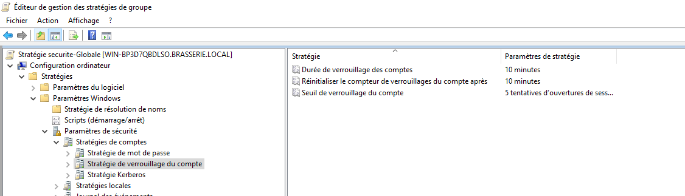
Appliquée sur brasserie.local. Permet de détecter les tentatives répétées de connexion avec un mauvais mot de passe.
Chemin : Configuration ordinateur > Paramètres Windows > Paramètres de sécurité > Stratégies locales > Stratégie d'audit
| Paramètre | Valeur |
|---|---|
| Auditer les événements de connexion | Succès + Échec |
| Auditer la gestion des comptes | Succès + Échec |
| Auditer l'accès aux objets | Échec |
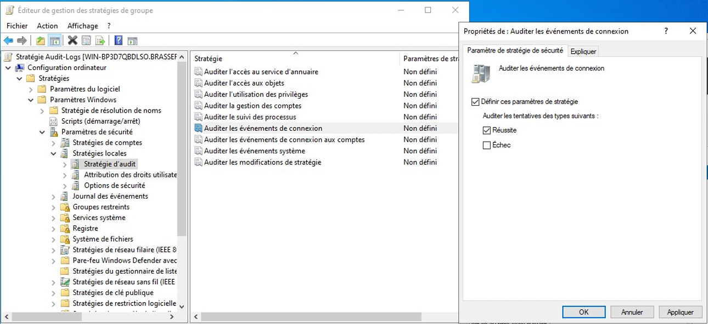
| ID Événement | Signification |
|---|---|
| 4625 | Échec de connexion (mauvais mot de passe) |
| 4740 | Compte verrouillé |
| 4624 | Connexion réussie |
| 4720 / 4726 | Compte créé / supprimé |
Appliquée sur l'OU Employes. Un employé de salle n'a pas besoin d'accéder aux outils système.
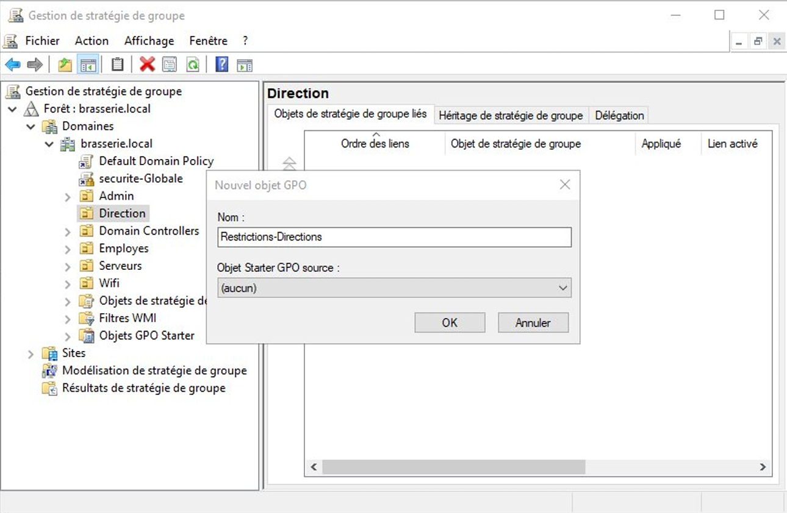
Chemin : Configuration utilisateur > Modèles d'administration > Système
Paramètre : Empêcher l'accès à l'invite de commandes → Activé
Important : Laisser "Désactiver le traitement des scripts" sur NON !
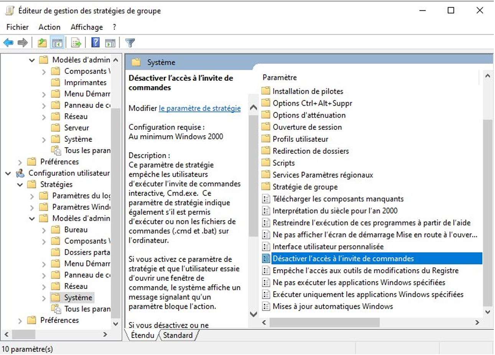
Chemin : Configuration utilisateur > Modèles d'administration > Panneau de configuration
Paramètre : Interdire l'accès au Panneau de configuration → Activé
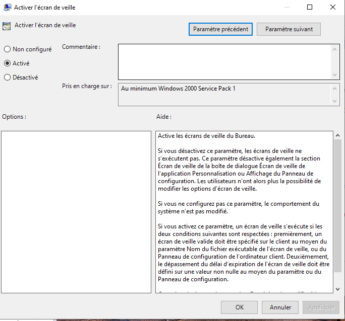
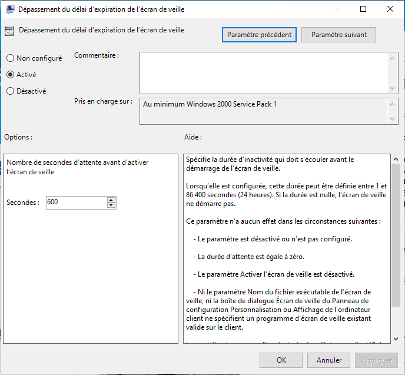
Chemin : Configuration utilisateur > Modèles d'administration > Bureau > Bureau > Papier peint du Bureau
Chemin de l'image : \\WIN-BP3D7QBDLSO\Wallpapers\employe.jpg
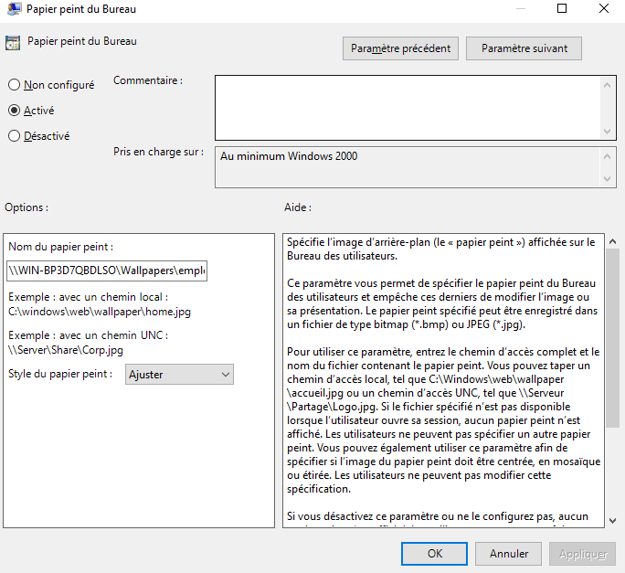
Appliquée sur l'OU Direction. Moins restrictive que les employés.
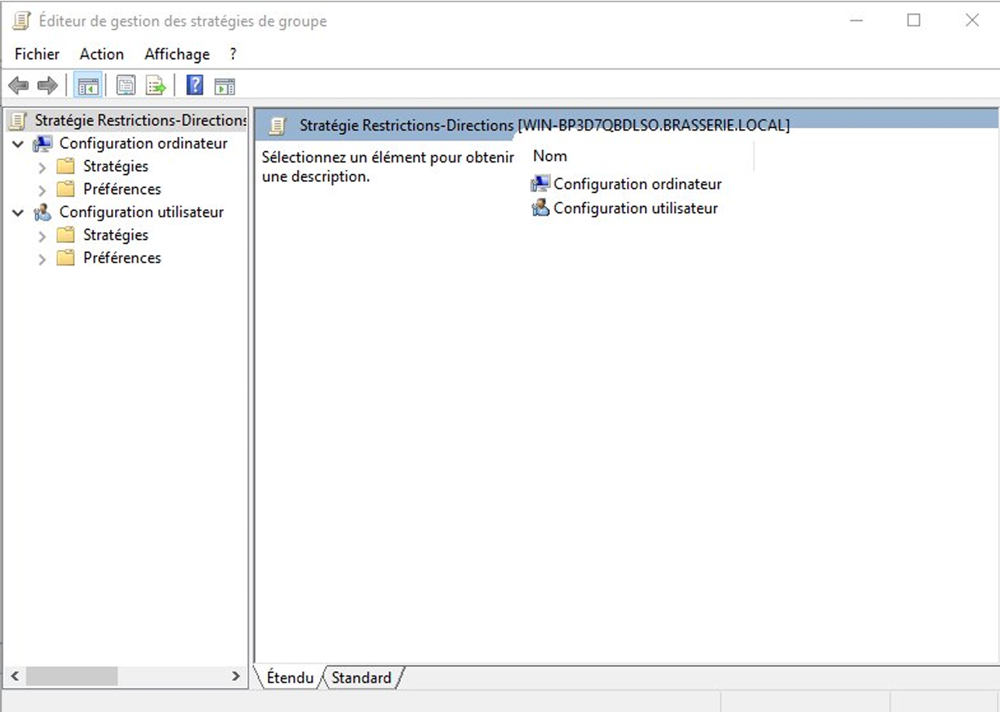
L'administrateur peut accéder au bureau du serveur à distance depuis le PC admin sans toucher physiquement au serveur.
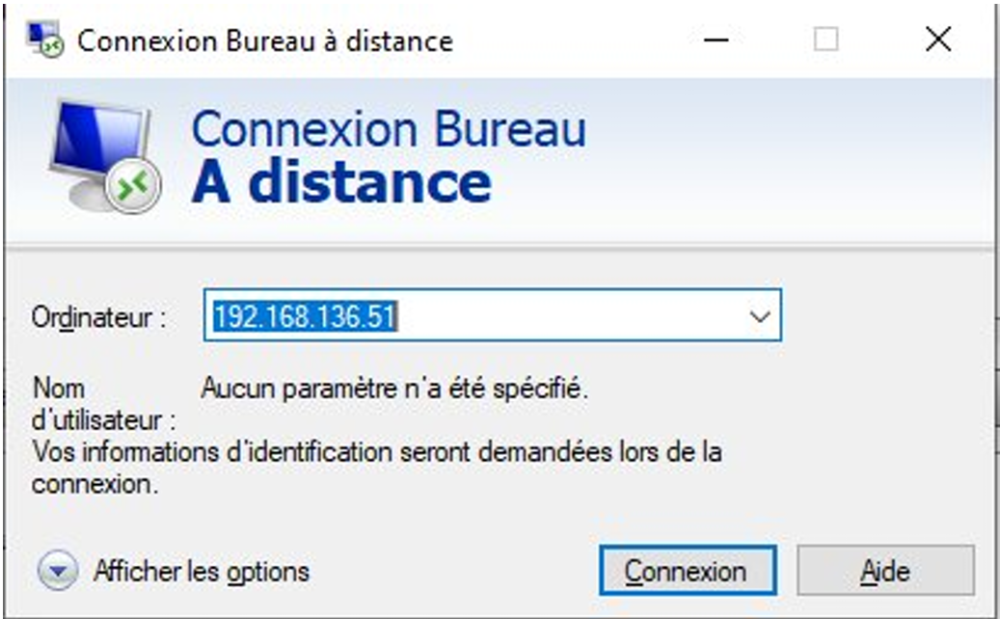
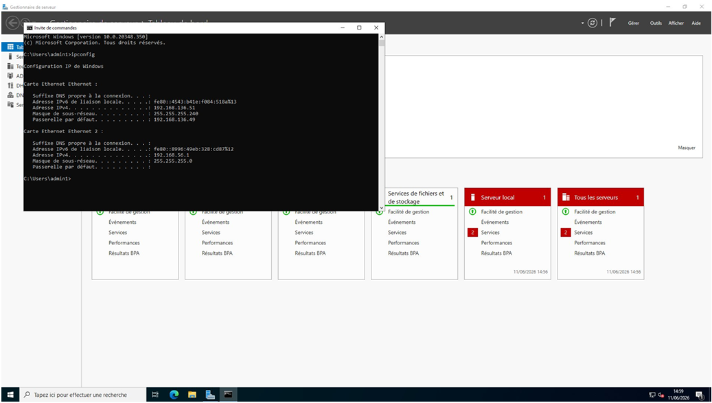
Pour accéder à eventvwr.msc du serveur depuis le PC admin, les règles pare-feu suivantes doivent être activées via wf.msc :
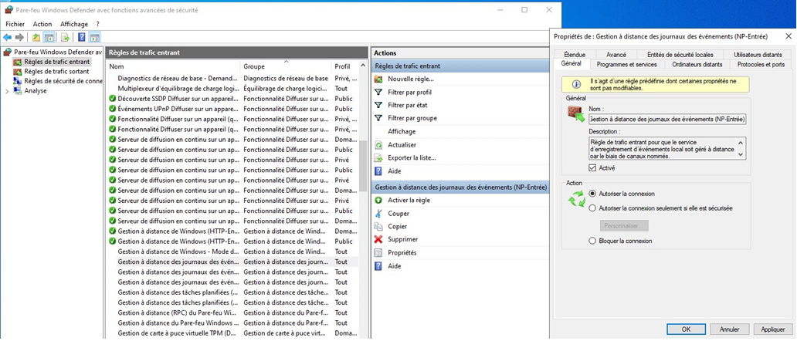
Problème 1 — GPO refusée
Cause : Le filtrage de sécurité ne contenait pas "Utilisateurs authentifiés" et "Ordinateurs du domaine".
Solution : gpmc.msc > GPO > onglet Étendue > Filtrage de sécurité > Ajouter les deux groupes.
Problème 2 — Fond d'écran noir
Cause : Le chemin UNC avec l'IP (\\192.168.136.51\Wallpapers) ne fonctionnait pas.
Solution : Utiliser le nom NetBIOS du serveur : \\WIN-BP3D7QBDLSO\Wallpapers\employe.jpg
Problème 3 — RDP refusé malgré le bon mot de passe
Cause : admin1 n'était pas dans le groupe Builtin\Administrateurs du DC.
Solution : dsa.msc > Builtin > Administrateurs > onglet Membres > Ajouter admin1.